Da Lat travel guide 2025 - Explore the Foggy City

Table of Contents
- 1. Which season is best to travel to Da Lat?
-
2. Instructions on how to get to Da Lat in the fastest and most convenient way
- 2.1. Going to Da Lat by bus - a popular and economical choice for a trip to Da Lat
- 2.2. Take a plane to Da Lat - a quick, time-saving choice for your trip to Da Lat
- 2.3. Take the train combined with a bus - explore Da Lat tourism with an interesting and convenient journey
- 2.4. Drive yourself to Da Lat - experience proactive and flexible travel to Da Lat on every road
-
3. Means of transportation within the city when traveling to Da Lat
- 3.1. Rent a motorbike - the perfect choice to freely travel and explore all the roads when traveling to Da Lat
- 3.2. Taxis and car rental - convenient transportation solutions for groups and families when traveling to Da Lat
- 3.3. Famous places to visit in Da Lat - discover the beauty and experience the best Da Lat travel
- 4. Famous places to visit in Da Lat - discover the beauty and experience the best Da Lat travel
-
5. Super hot check-in and entertainment locations in Da Lat
- 5.1. Datanla waterfall tourist area - an ideal stop for Da Lat tourism
- 5.2. Zoodoo Da Lat Zoo - an interesting destination in the Da Lat travel itinerary
- 5.3. Puppy Farm - a unique fun experience when traveling to Da Lat
- 5.4. Langbiang tourist area - an experience viewing Da Lat from above that cannot be missed
- 5.5. Beautiful cafes in Da Lat - an experience not to be missed when traveling to Da Lat
- 5.6. Cu Lan Village - Da Lat tourist destination with a cultural space in the middle of the jungle
- 5.7. Fresh Garden - flower paradise in the heart of the city in Da Lat travel itinerary
- 5.8. Da Lat Night Market - a destination not to be missed for Da Lat tourism
- 6. What and where to eat when traveling to Da Lat?
- 7. Suggested 3 days 2 nights Da Lat travel itinerary
-
8. Top 5 Da Lat specialties you should buy as gifts when traveling to Da Lat
- 8.1. Wind-hanging roses - A flavorful gift for your trip to Da Lat
- 8.2. Fruit jam - Sweet and rich in flavor when traveling to Da Lat
- 8.3. Fresh strawberries - Famous fruit specialty that is indispensable when traveling to Da Lat
- 8.4. Cau Dat Coffee - A gift for coffee lovers when traveling to Da Lat
- 8.5. Artichoke tea - A healthy gift, easy to preserve when traveling to Da Lat
- 9. Da Lat travel experience helps you have a complete journey
Travel to Da Lat is an ideal journey for those who love fresh, cool space and poetic natural scenery. In the city of flowers, visitors not only can breathe the pleasant atmosphere, admire the vast pine forests and clear blue lakes, but also have the opportunity to explore Da Lat's unique cuisine with countless delicious dishes.
For a long time, Da Lat city has become a favorite destination for romantic souls who like the tranquility and pleasant cold typical of the highlands. To make your trip more complete, don't miss the Da Lat travel guide from A-Z below - a comprehensive collection of necessary experiences to help you explore this place in the most complete and enjoyable way.
1. Which season is best to travel to Da Lat?
Located at an altitude of 1,500m, Da Lat has a cool climate all year round, each season has its own beauty, suitable for each type of tourism. Let's explore the most ideal times to visit the city of flowers:
1.1. January - April: Brilliant spring in the mountain town
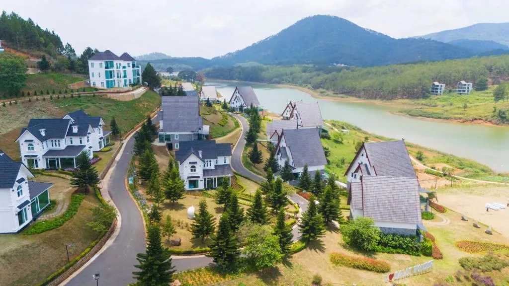
Da Lat is chilly at the beginning of the year, the air is fresh, cherry blossoms, white banyan trees, and purple poinciana bloom all over the street. This is the ideal season to check-in, take wedding photos, or travel with relatives and friends.
📌Note: Bring warm clothes and follow the flower blooming schedule if you want to hunt for cherry blossoms.
1.2. May - September: Cool summer in the city of thousands of pine trees - travel to Da Lat
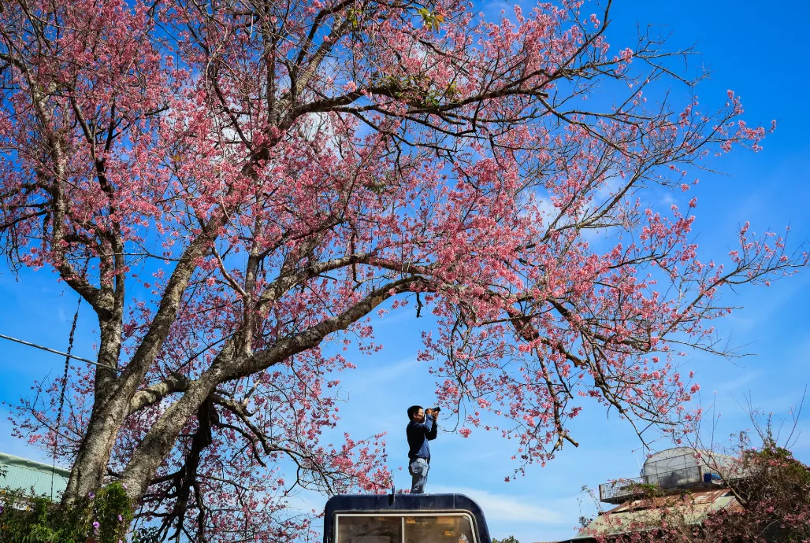
While many places are hot and sunny, Da Lat is still pleasant, with light rain, ideal for relaxing or exploring cafes with beautiful views. This time also has sunflowers blooming and romantic fog scenes.
☂️Note: You should prepare a light raincoat or umbrella because the rain often comes unexpectedly.
##### 1.3. October - December: Dry season - the most beautiful time of the year
At the end of the year, Da Lat is colder, with lots of morning dew, poetic scenery with wild sunflowers, white cabbage and pink grass hills. This is also the "cloud hunting" season that many tourists love at Thien Phuc Duc hill, Da Phu, Langbiang.
🎒Note: Book tickets and rooms early because this season is crowded.
#### 2. Instructions on how to get to Da Lat in the fastest and most convenient way
Da Lat is about 300km from Ho Chi Minh City and nearly 1,500km from Hanoi, so depending on the starting point, you can choose many suitable means of transport:
2.1. Going to Da Lat by bus - a popular and economical choice for a trip to Da Lat
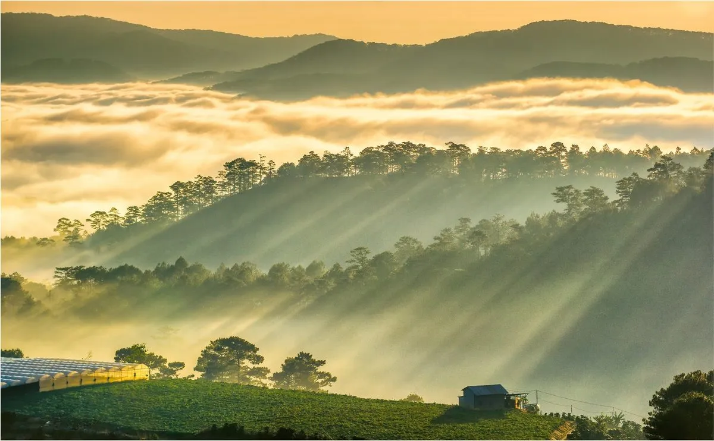
From Ho Chi Minh City and the Southern provinces, passenger cars are a popular means of transport thanks to their reasonable cost and convenience. There are many companies operating continuous routes, with seats, beds or double rooms, ticket prices range from 150,000 - 380,000 VND.
💡*Da Lat travel tip*: If you want to be more comfortable, you should choose a double room car to have more private space and easier rest.
2.2. Take a plane to Da Lat - a quick, time-saving choice for your trip to Da Lat
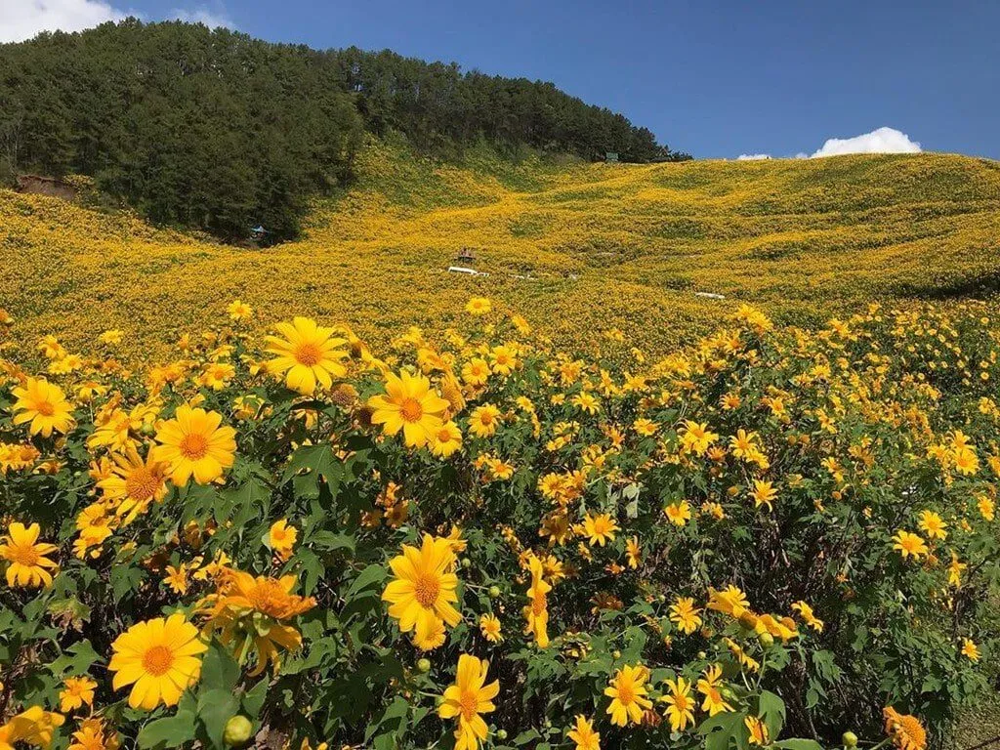
Flying to Lien Khuong airport from Hanoi, Da Nang, Can Tho... is the optimal choice. Domestic airlines such as Vietnam Airlines, Vietjet, Bamboo Airways operate many flights with ticket prices of 400,000 - 2,000,000 VND/way. From the airport to Da Lat center takes about 45 minutes by taxi or bus.
2.3. Take the train combined with a bus - explore Da Lat tourism with an interesting and convenient journey
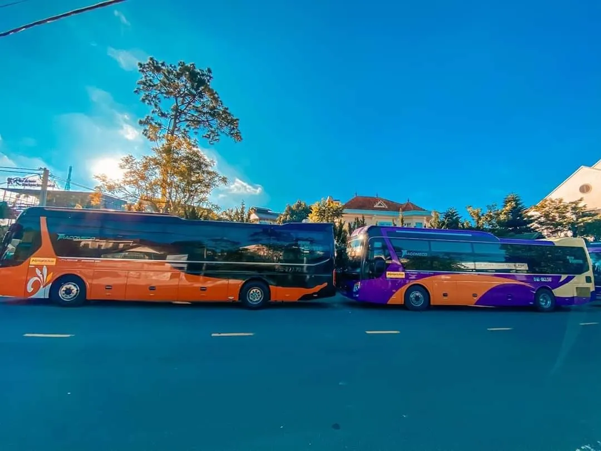
Da Lat does not have a train station, but you can take the train to Nha Trang and then catch a bus to Da Lat (130km). This is an interesting choice if you want to combine exploring Nha Trang beach and Da Lat mountains and forests, with a cost of about 100,000 - 150,000 VND/person.
2.4. Drive yourself to Da Lat - experience proactive and flexible Da Lat travel on every road

If you like to experience winding mountain passes, you can drive a motorbike or personal car. However, you need a steady steering wheel and a safe vehicle, especially on Highway 20 from Ho Chi Minh City to Da Lat.
3. Means of transportation within the city when traveling to Da Lat
Da Lat has many diverse means of transportation, helping you easily explore famous attractions in the city:
3.1. Rent a motorbike - the perfect choice to freely travel and explore all the roads when traveling to Da Lat
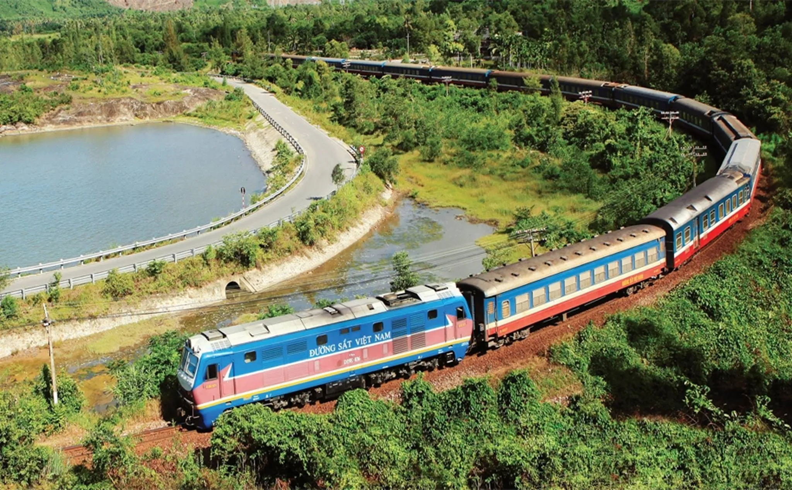
Renting a motorbike is a popular choice, especially for young people, thanks to its flexibility and reasonable cost (80,000 - 150,000 VND/day). You can rent a car at hotels or reputable rental locations on central roads such as Bui Thi Xuan and Nam Ky Khoi Nghia.
✅Tip:Choose a scooter for inner city travel, a manual vehicle if going to Ta Nung or Prenn pass.
3.2. Taxis and car rental - convenient transportation solutions for groups and families when traveling to Da Lat
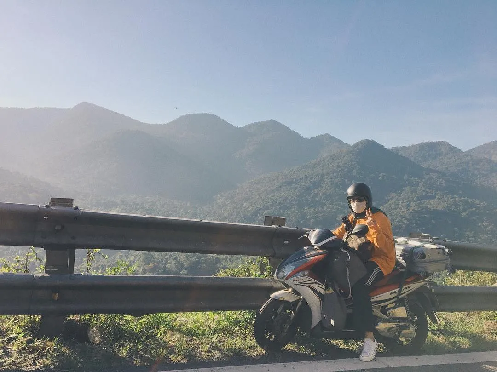
Renting a self-driving car or taxi is suitable for large groups or families. Car rental price is about 700,000 - 1,000,000 VND/day, taxi from 10,000 - 18,000 VND/km. You can also rent a car with a driver for about 1,200,000 - 1,500,000 VND/day for a 7-seat car.
🚗Suggestion:Renting a car with a driver helps you comfortably explore, especially when coming to Da Lat for the first time or going to remote destinations.
3.3. Famous places to visit in Da Lat - discover the beauty and experience the best Da Lat travel
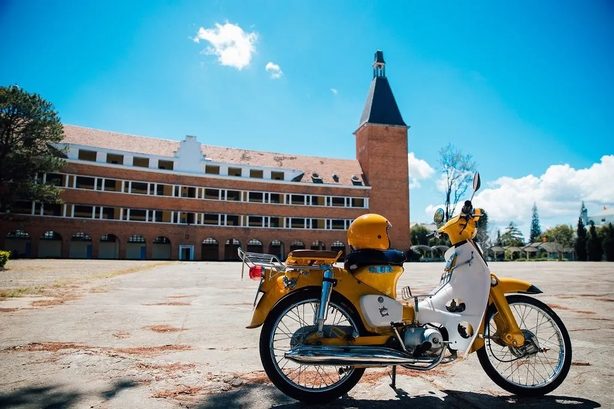
Bicycles are suitable for those who want to relax and explore the fresh air around Xuan Huong Lake, Hoa Binh area or small central roads. Bicycle rental price is only about 20,000 - 30,000 VND/hour.
4. Famous places to visit in Da Lat - discover the beauty and experience the best travel to Da Lat
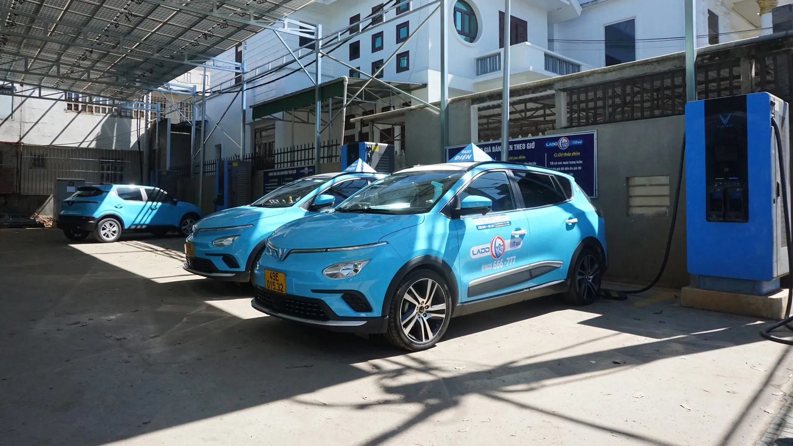
When exploring Da Lat, you will have the opportunity to visit many outstanding destinations from poetic nature to unique architectural works. Each Da Lat tourist destination has its own beauty, promising to bring memorable experiences to visitors. Here are ideal suggestions that you should not miss:
#### 4.1. Lam Vien Square - a prominent tourist destination in Da Lat, a brilliant symbol of the foggy city
As the most popular check-in place in Da Lat, Lam Vien Square stands out with two works shaped like wild sunflowers and giant artichoke buds made of stained glass, overlooking the romantic Xuan Huong Lake. Not only symbolic, this place is also a place to have fun, stroll, enjoy street specialties and save vivid photos.
-
Address: Tran Quoc Toan, Ward 1, City. Da Lat
-
Ticket price: Free
#### 4.2. Xuan Huong Lake - a prominent Da Lat tourist destination, the green heart of the city of flowers
Located right in the center, Xuan Huong Lake is one of the famous places in Da Lat with calm water surface, surrounded by pine trees and lush green lawns. Visitors can walk, duck, ride a tandem bike around the lake or capture beautiful moments at the Y-shaped bridge.
-
Address: Intersection between Tran Quoc Toan & Nguyen Thai Hoc streets, Ward 1, City. Da Lat
-
Ticket price: Free
#### 4.3. Bao Dai Palace - Da Lat tourist destination with unique royal architecture and rich history
The Bao Dai palace system is a testament to the royal period with a design imbued with ancient French architecture combined with Hue royal style. This was once the residence and working place of the last king of the Nguyen Dynasty - King Bao Dai.
-
Address:
-
Palace 1: 01 Tran Quang Dieu, Ward 10
-
Palace 2: 12 Tran Hung Dao, Ward 10
-
Palace 3: 01 Trieu Viet Vuong, Ward 4
-
Ticket price:
-
Palace 1: 50,000 VND/adult, 25,000 VND/child
-
Palace 2 & 3: 30,000 VND/ticket
#### 4.4. Tuyen Lam Lake - Da Lat tourist destination with poetic and peaceful natural space
As the largest lake in Da Lat, Tuyen Lam Lake is surrounded by lush green pine forests, creating a peaceful natural picture. This is a suitable Da Lat tourist destination for those who want to experience boating, duck riding, camping or enjoying coffee by the lake.
-
Address: Ward 4, City. Da Lat, about 6km from the center
-
Ticket price: Free
#### 4.5. Valley of Love - a romantic Da Lat tourist destination, attracting many couples and tourists to explore
Located between pine hills and lakes, Love Valley possesses a dreamy beauty, suitable for couples and tourists who love romance. This place has fun activities such as trams, jeeps, duck rides, and many miniatures for taking pictures.
-
Address: 3-5-7 Mai Anh Dao, Ward 8, 5km from the center
-
Ticket price: 125,000 VND/child, 250,000 VND/adult
#### 4.6. Truc Lam Zen Monastery - a famous Da Lat tourist destination for spiritual journeys and relaxation
Located on Phung Hoang Mountain, Truc Lam Zen Monastery is a prominent pilgrimage site of the Truc Lam Yen Tu Zen sect. The space here is quiet and peaceful, with views overlooking the romantic Tuyen Lam Lake and the surrounding vast pine forest.
-
Address: Truc Lam Yen Tu, Ward 3, City. Da Lat
-
Ticket price: Free
#### 4.7. Cau Dat tea hill - an ideal Da Lat tourist destination to hunt clouds and watch the sunrise
As one of the prominent check-in spots in Da Lat, Cau Dat tea hill fascinates visitors with its fresh air, immense green color and poetic scenery at dawn. This is also an ideal rattan hunting spot and has a unique tea museum.
-
Address: Truong Tho, Xuan Truong Ward, 25km from the center
-
Ticket price: Free
#### 4.8. Domaine de Marie Church - Da Lat tourist destination with unique European architecture in the middle of a mountain town
Domaine de Marie Church impresses with its striking red-brown color and design inspired by Central Highlands communal houses. Surrounded by a campus filled with cherry blossoms and narcissus flowers, ideal for taking photos and strolling.
-
Address: 1 Ngo Quyen, Ward 6, City. Da Lat
-
Ticket price: Free
#### 4.9. Da Lat City Flower Garden - A paradise of vibrant flowers for Da Lat tourism
As an indispensable tourist destination in Da Lat on the journey of discovery, the city's flower garden gathers hundreds of precious flower species from all over. The campus is elaborately designed with many miniature landscapes, orchid gardens, and rose houses, very suitable for enjoying and taking photos.
-
Address: 02 Tran Nhan Tong, Ward 8, City. Da Lat
-
Ticket price: 50,000 VND/child, 100,000 VND/adult
#### 4.10.Linh Phuoc Pagoda - Da Lat tourist destination with unique and impressive architecture
Also known as Ve Chai Pagoda, Linh Phuoc Pagoda stands out with its sophisticated ceramic mosaic art, along with many impressive records such as the tallest bell tower, heaviest bronze bell in Vietnam and the statue of Bodhisattva Avalokiteshvara made from 700,000 immortal flowers.
-
Address: 120 Tu Phuoc, Trai Mat, Ward 11, about 8km from Da Lat center
-
Ticket price: Free
5. Super hot check-in and fun places in Da Lat
Not only famous for its cool climate all year round and charming nature, Da Lat also fascinates tourists with a series of fun and photo-taking spots. Whether you love peace or are looking for an exciting experience, the foggy city always has suitable activities to explore. Below are extremely hot tourist destinations in Da Lat, ideal to check-in and enjoy a memorable vacation:
5.1. Datanla waterfall tourist area - an ideal stop for Da Lat tourism
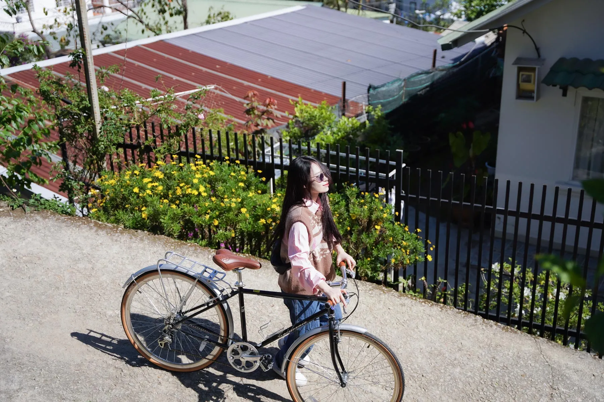
Located close to Prenn Pass, Datanla waterfall attracts tourists with its poetic and majestic beauty. The waterfall flows all year round, weaving through the green forest canopy, creating a relaxing and ideal space for outdoor activities. Here, you can experience walking through the forest, admire the waterfall from above or participate in adventure games such as waterfall skiing, zipline, rope swing over waterfalls...
-
Address: Prenn Pass, Highway 20, Ward 3, City. Da Lat
-
Reference ticket price: 80,000 VND/adult - 50,000 VND/child
5.2. Zoodoo Da Lat Zoo - an interesting destination in the Da Lat travel itinerary
Zoodoo is a friendly Australian-style zoo model, suitable for those who love animals and eco-tourism. You will have the opportunity to interact and take photos with species such as kangaroos, sheep, ponies or alpacas in open space and close to nature.
-
Address: Highway 27C, Da Nhim commune, Lac Duong district (~30km from Da Lat)
-
Reference ticket price: 150,000 VND/adult - 75,000 VND/child (from 0.9m to 1.2m high)
5.3. Puppy Farm - a unique fun experience when traveling to Da Lat
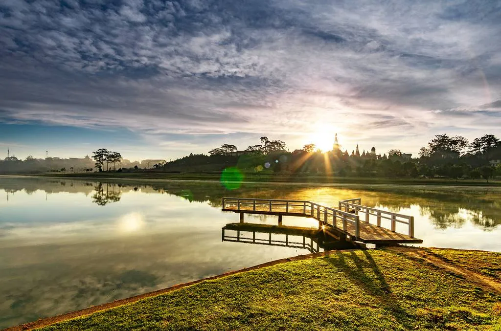
Puppy Farm is one of the prominent farms in Da Lat, where many high-tech crops and friendly animals converge. Here, you can walk through flower fields, pick strawberries at the garden, visit tomato and cactus gardens or play with adorable dogs and alpacas.
-
Address: Cam Ly area, Ward 7, City. Da Lat
-
Reference ticket price: 100,000 VND/adult – 50,000 VND/child (from 1m2 to 1m4) – Free for children under 1m2
5.4. Langbiang tourist area - an experience viewing Da Lat from above that cannot be missed

*Langbiang* is not only a symbol of Lam Vien plateau but also a great place to see the panoramic view of Da Lat city from an altitude of nearly 2,200m. You can choose to ride a jeep to the top, participate in mountain climbing or camp overnight to fully experience the majestic beauty of this place.
-
Address: Lac Duong town, Lac Duong district, Lam Dong province
-
Reference ticket price: 50,000 VND/adult - 25,000 VND/child
5.5. Beautiful cafes in Da Lat - an experience not to be missed when traveling to Da Lat

The poetic space of cafes is an indispensable part of the Da Lat travel itinerary. With architecture that blends with nature and a view of the pine hills, cafes like Cheo Veo, Chenh Cafe, Nha Ben Suoi or Xom Leo... all bring a relaxing, quiet experience and a cool virtual living corner.
-
Suggested some outstanding restaurants:
-
Cheo Veo: 116 Hung Vuong, Da Chien alley, Ward 11
-
The Halfway: Alley 31/8, Street 3/4, Ward 3
-
Me Linh Coffee: Village 4, Ta Nung commune
5.6. Cu Lan Village - a tourist destination in Da Lat with a cultural space in the middle of the jungle
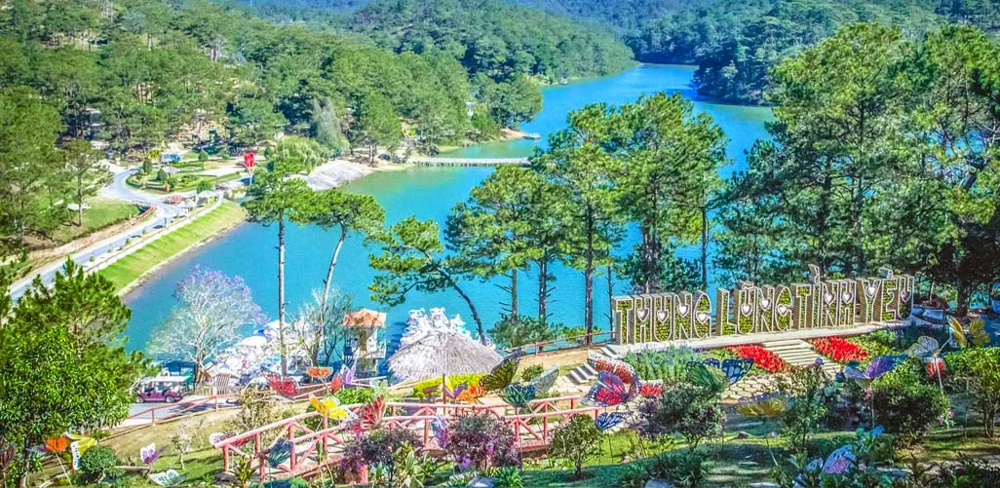
Nestled at the foot of Langbiang Mountain, Cu Lan Village is a unique destination that helps visitors discover the traditional cultural beauty of the K'ho people. The peaceful space, vast pine forests and lovely wooden houses will take you away from modern life to wild nature.
-
Address: Suoi Can village, Lat commune, Lac Duong district
-
Reference ticket price: 100,000 VND/adult
5.7. Fresh Garden - flower paradise in the heart of the city in the Da Lat travel itinerary
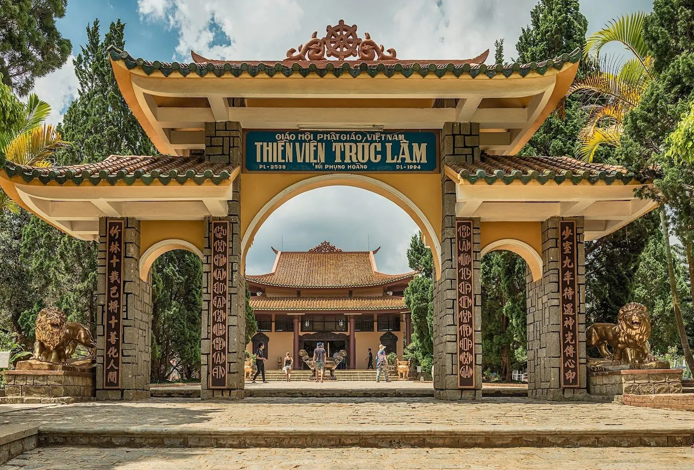
Fresh Garden is a flower garden located right in the center of Da Lat, gathering thousands of flowers blooming brilliantly all year round. Besides the colorful space, this place also has a lake with forest view and many eye-catching decorative miniatures, very suitable for taking souvenir photos.
-
Address: 90B Van Thanh, Ward 5, City. Da Lat
-
Reference ticket price: 120,000 VND/adult - 80,000 VND/child
5.8. Da Lat Night Market - a destination not to be missed for Da Lat tourism

Referring to Da Lat tourist attractions at night, it is impossible not to mention Da Lat night market - a convergence of hot specialties and a series of local handicraft products. You can enjoy grilled rice paper, soy milk, baked potatoes... and buy souvenirs such as wool scarves and dried fruits as gifts.
-
Address: Hoa Binh Area, Ward 1, City. Da Lat
-
Ticket price: Free
💡Note: Reference ticket prices may change depending on the time and promotions of each tourist destination.
6. What and where to eat when traveling to Da Lat?
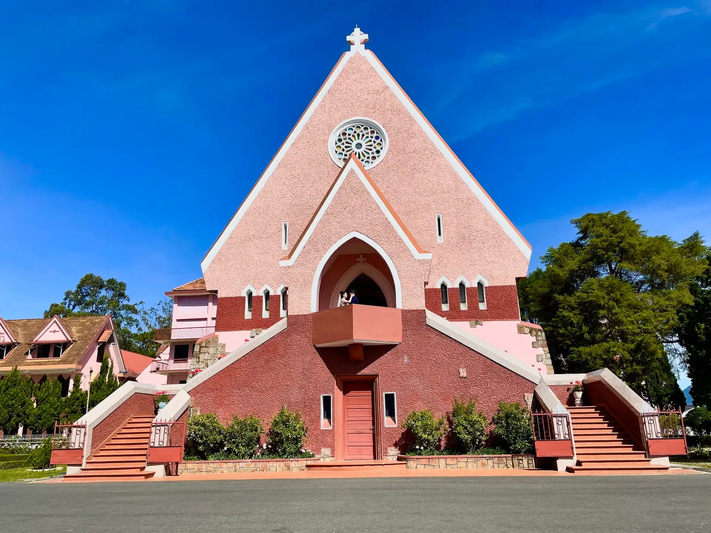
Da Lat cuisine is an indispensable part of the travel experience with many typical delicious dishes, suitable for the cold atmosphere of the mountain town. Here are 5 must-try dishes:
#### 6.1. Shumai bread - A typical breakfast dish not to be missed when traveling to Da Lat
A familiar breakfast dish with crispy bread dipped in hot, spicy satay sauce.
Delicious restaurant suggestions:
-
26 Hoang Dieu, Ward 5
-
4 Tran Nhat Duat
-
16A Nguyen Chi Thanh, Ward 1
#### 6.2. Chicken intestine wet cake - Attractive specialty for culinary experience when traveling to Da Lat
Fragrant wet cake served with chicken intestines, chicken meat and rich sweet and sour fish sauce.
Delicious restaurant suggestions:
-
Long: Alley 202 Phan Dinh Phung
-
Page: 15F Tang Bat Ho
-
Hang 68: 68 Phan Dinh Phung
#### 6.3. Da Lat grilled rice paper - Attractive snack not to be missed when traveling to Da Lat
“Da Lat Pizza” with rich toppings such as eggs, pate, cheese, dried beef... grilled crispy over charcoal.
Delicious restaurant suggestions:
-
Aunt Dinh: 26 Hoang Dieu
-
61 Nguyen Van Troi
-
180 Bui Thi Xuan
#### 6.4. Banh can shumai - A breakfast dish not to be missed when traveling to Da Lat
Made from rice flour, filled with a variety of fillings such as eggs, beef, squid... served with shumai fish sauce.
Delicious restaurant suggestions:
-
Common House: 1 Common House
-
15A Nguyen Bieu
-
Thuy: 20 Anh Sang hamlets
7. Suggested Da Lat travel itinerary 3 days 2 nights
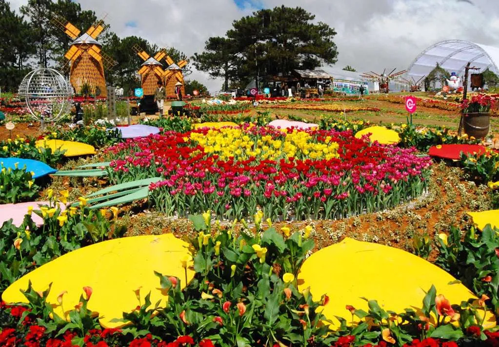
The 3 days 2 nights Da Lat itinerary is the ideal choice for you to explore nature, cuisine and enjoy fresh air. Below are detailed suggestions:
#### Day 1:
-
Morning: Enjoy shumai sandwiches– Check-in Tuyen Lam lake– Experience the slide at Datanla waterfall– Visit the peaceful **Truc Lam Zen Monastery next to the pine forest.
-
Noon: Return to the center rest at the hotel, recharge your energy.
-
Afternoon: Chill with sunset coffee at Horizon Coffee, open pine hill view, ideal for watching the sunset.
-
Evening:Walk around Da Lat night market, discover delicious street food: grilled rice paper, grilled skewers, hot soy milk...
#### Day 2:
-
Morning: Enjoy chicken intestine moist cake– Climb the majestic Langbiangmountain, see the panoramic view of the city from above.
-
Noon: Visit Cu Lan village, immerse yourself in nature – Lunch at the tourist area – Return to hotel to rest.
-
Afternoon: Visit colorful city flower garden – Relax on a duck ride at Xuan Huong lake**.
-
Evening:Dine at*Xom Leo Grill & Chill Shop*– Chill space in the middle of the forest, delicious grilled dishes, watching Da Lat sparkling at night.
📍 Address:*113 Huynh Tan Phat, Ward 11, Da Lat*
🔥 Cozy chill grill space, full of mountain town style, with a rich menu, authentic Da Lat flavors.
👉 Book a table: Fanpage | ☎️ Hotline: 076.45.27.336 – 08.99.42.84.34 – 0902.91.22.40
📍 Directions: See Google Maps
#### Day 3:
-
Morning: Morning coffee in Hoa Binh area– Enjoy banh can, pepper cake with sticky rice– Visit Cau Dat tea hillwith lush green scenery.
-
Noon: Visit Linh Phuoc Pagoda (Ve Chai Pagoda)– Return to check out hotel–Have a light lunch– End the journey, prepare to leave Da Lat.
Tip: If you want to travel on vacation, you can omit the destinations, prioritize walking around the streets, sightseeing and chilling coffee to better feel the rhythm of Da Lat life.
8. Top 5 Da Lat specialties you should buy as gifts when traveling to Da Lat
Da Lat not only attracts tourists with its charming scenery and cool climate but is also famous for its countless delicious specialties that are easy to bring home as gifts. Below are Da Lat specialties worth choosing after your trip:
8.1. Wind-hanging roses - A flavorful gift for your trip to Da Lat
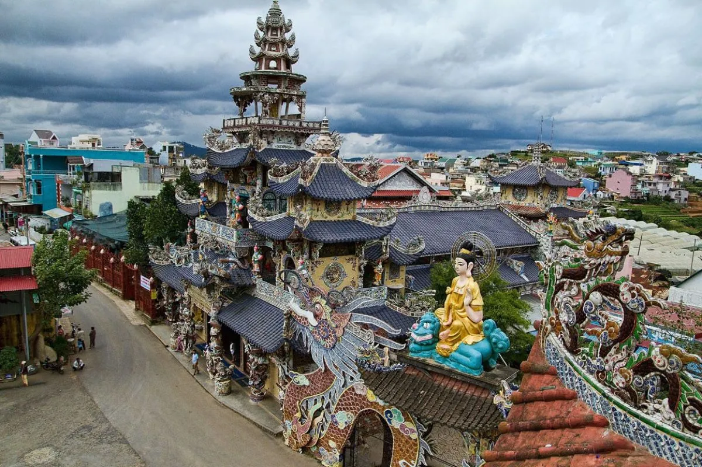
Wind-hanging persimmon is one of the most outstanding specialties of the highland region. The persimmons are carefully selected, then processed and hung in the typical natural climatic conditions of Da Lat, helping to retain their sweetness, flexibility and characteristic aroma.
Reputable place to buy:
-
Da Lat Market
-
Famous gardeners such as Moc Tra Farm, La Fresh Da Lat
8.2. Fruit jam - Sweet and rich in flavor when traveling to Da Lat

Da Lat is also known as the "land of jam" with countless types of attractive jams such as strawberry jam, artichoke jam, rose jam, tomato jam... Each type has its own unique flavor, delicious, attractive and suitable for all ages.
Suggested place to buy:
-
Da Lat market area
-
Traditional jam factories, specialty shops
8.3. Fresh strawberries - Famous fruit specialty that is indispensable when traveling to Da Lat
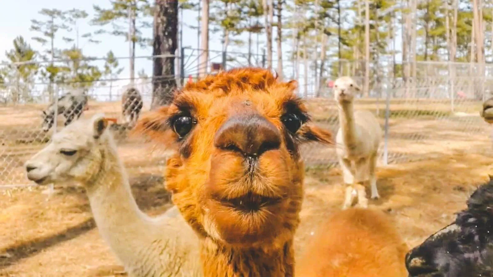
Strawberries are a "national specialty" fruit when mentioning Da Lat. Strawberries here have a mild sweet taste, are succulent, have shiny skin and are often grown organically in greenhouses.
Recommended address:
-
Tourist strawberry garden (can be picked on site)
-
Fruit stalls at Da Lat market
8.4. Cau Dat Coffee - A gift for coffee lovers when traveling to Da Lat
If you are a coffee lover or are looking for a unique gift, Cau Dat coffee is an option not to be missed. The coffee here has a charming aroma and rich taste, especially with the rare moka and weasel coffee varieties.
Place of sale:
-
Cau Dat Farm
-
L'angfarm, Berryland or shops specializing in selling specialty coffee
##### 8.5. Artichoke tea - A healthy gift, easy to preserve when traveling to Da Lat
Artichoke is a plant widely grown in Da Lat, often processed into tea or dried. Artichoke tea is not only delicious but also helps cool the liver, purify the body and is easy to bring home as a gift.
Address you should visit:
-
Reputable stores such as L'angfarm, DaLaVi, Cau Dat Farm
-
Da Lat central market area
9. Da Lat travel experience helps you have a complete journey
To have a smooth and memorable trip to Da Lat, careful preparation is always necessary. Below are some useful tips you should not ignore.
9.1. Choose the right place to stay when traveling to Da Lat

Depending on your preferences and budget, you can choose to stay in a lovely homestay, a comfortable hotel or a luxury resort. If you want to conveniently travel and explore famous places, you should choose a room near Xuan Huong Lake or the city center. If you love tranquility and closeness to nature, suburban homestays or glamping in the middle of pine forests are ideal choices.
9.2. Necessary clothing when traveling to Da Lat
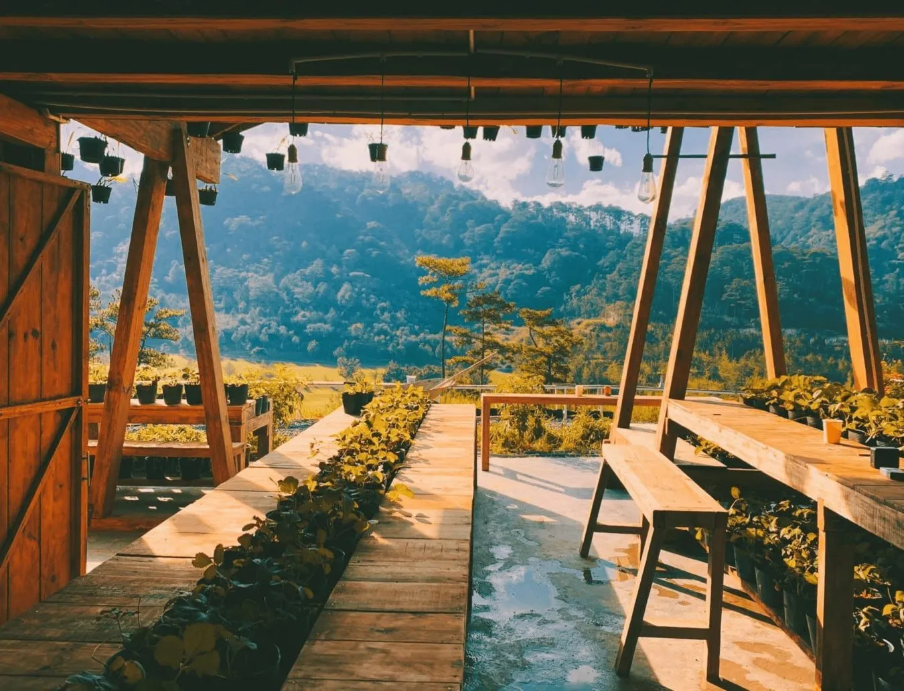
Da Lat has a cool climate all year round and is chilly in the early mornings and late evenings, especially from October to January. You should prepare warm coats, scarves, and sneakers to keep warm and conveniently move around. In addition, don't forget to bring some nice clothes to check-in virtually at famous destinations.
##### 9.3. Some important notes when traveling to Da Lat
-
Prepare a raincoat or small umbrella: Da Lat's weather is quite erratic, prone to rain in the afternoon from May to December.
-
Choose appropriate shoes: With typical steep hilly terrain, you should wear soft, easy-to-move shoes.
-
Sun protection: Even though the weather is cool, UV rays are still high, so apply sunscreen and bring sunglasses and a mask.
-
Be careful when driving: If you rent a motorbike yourself, you need to pay attention because there are many mountain passes and can easily be slippery.
-
Ask the price before buying: At tourist areas or night markets, you should ask the price carefully and bargain reasonably to avoid being overcharged.
Da Lat is an ideal destination with a chilly climate, poetic landscape and slow pace of life. No matter what season you come, you will experience the unique beauty of the foggy city. Outstanding places such as Xuan Huong Lake, Love Valley or cafes with beautiful views are always ready for you to explore. Please prepare carefully the schedule, means and costs to make the trip complete. Hopefully this travel guide will help you have a fun and memorable trip to Da Lat.